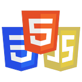
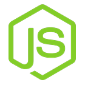
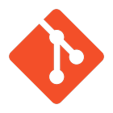
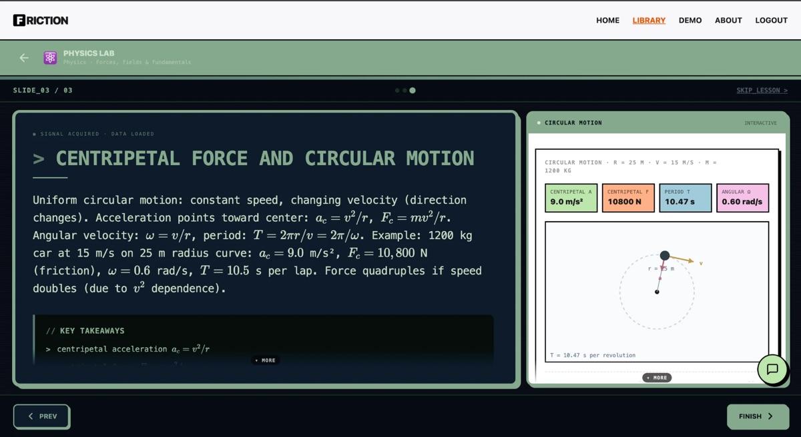
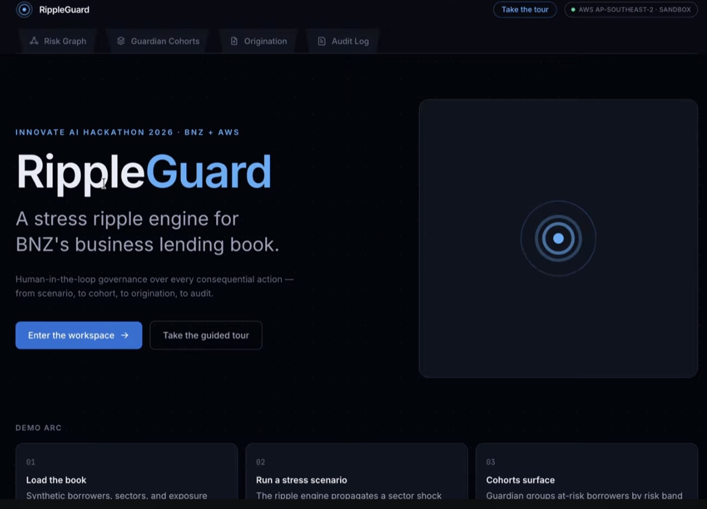
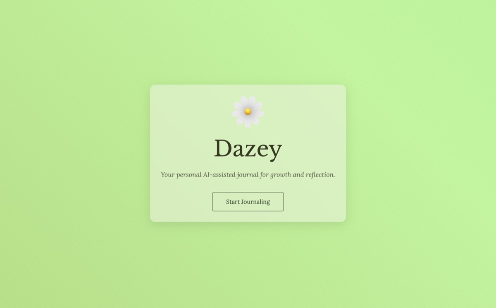
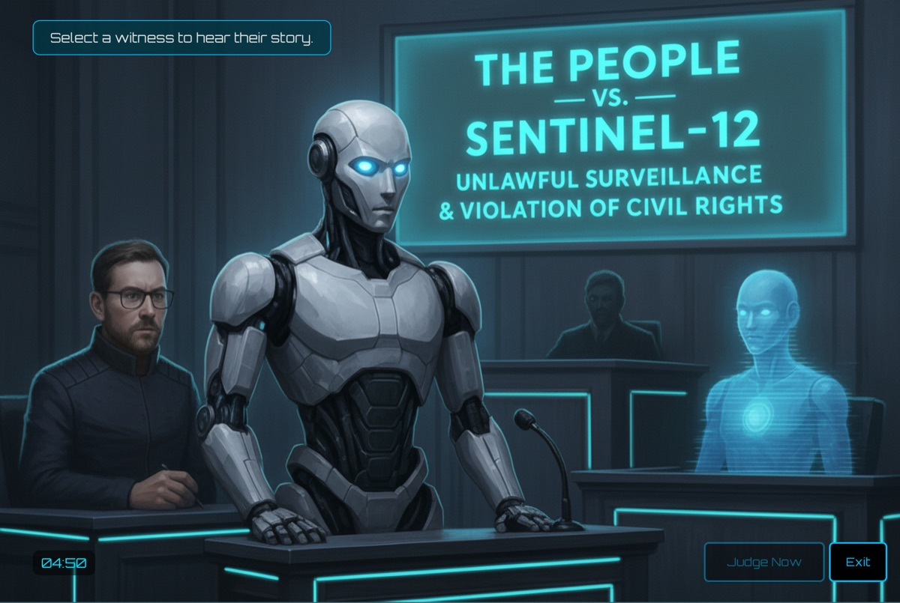
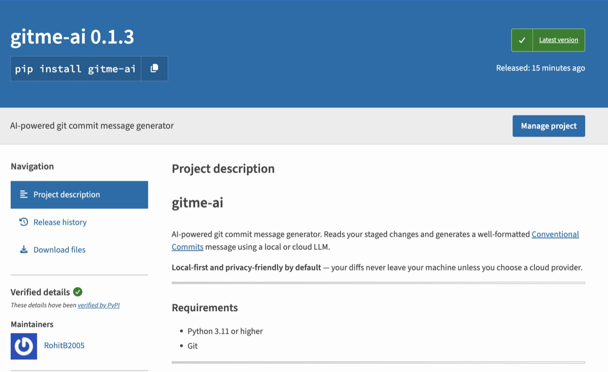

Hi, I'm
Rohit Balaji
Software Engineer · Full-Stack · AI Integration
- 1st GDGCxDEVS Hackathon 2025
- Winner Innovate AI · BNZ × AWS 2026
I'm a third-year Software Engineering student at the University of Auckland with a passion for building full-stack and AI-powered applications that solve real problems. Growing up as a gamer sparked my curiosity for how software creates impactful experiences, and pushed me from playing to building.
I care about building experiences that actually work well for the people using them, and I'm always exploring what's next — whether that's local or agentic AI workflows, new and improved frameworks, or a sharper approach to a familiar problem. That drive recently paid off with both a 1st Place and Emerging Talent award at the GDGCxDEVS Hackathon, judged by engineers from Visa, Pushpay, Atlassian, and Serato — and a Challenge 3 win at the Innovate AI Hackathon, run with BNZ and AWS.
Languages & Frameworks
Java
Python
TypeScript

HTML/CSS/JS
React
Next.js

Node.js
Tailwind
AWS
Firebase
Flask
Vite
JavaFX
Electron

Git
Drag to spin · hover to pause
Skills
AI & LLM Integration
Experience integrating LLM's (OpenAI, Gemma) into applications using RAG (Retrieval-Augmented Generation), LangChain, Proxies, and Vector Databases.
Data Structures & Algorithms
A developed understanding of core CS fundamentals including Graph Theory, Dynamic Programming, and complexity analysis. I actively refine my problem-solving efficiency through LeetCode.
Full-Stack Engineering
Ability to architect end-to-end solutions, connecting responsive front-end interfaces (React, JavaFX) with robust back-end systems (Firebase, Python Flask).
Agile Development
Proficient in leading Scrum sprints, managing backlogs via Jira, and utilizing Git for version control in collaborative, cross-functional team environments.
Certifications
Projects

Friction - AI Study Tool from Your Notes
Friction turns your own lecture notes into interactive lessons. Paste notes or upload a PDF and it builds a slideshow, quiz, flashcards and fill-in-the-blank exercises from the actual content — not generic explanations — with some slides carrying an interactive simulation seeded from your own numbers. PDFs are parsed in the browser, falling back to OCR for scans and photos. Named for "desirable difficulty" in learning science: material you work at is material you retain. A signed-out demo runs a full lesson, no account needed.

RippleGuard - Credit-Risk Stress Simulator
Winner of Challenge 3 at the Innovate AI Hackathon 2026, run with BNZ and AWS. It models a bank's lending book as a graph, not a table, so a sector shock reaches suppliers and guarantors never hit directly — before anyone misses a payment. Scoring is deterministic with no LLM in the loop, so every number is reproducible and every flag cites its policy clause. Overrides need a written justification that Amazon Comprehend checks is substantive. Team of three on synthetic data; I owned the AWS backend, deploy tooling and two frontend screens.

Dazey - AI Journal & Note Taker
Dazey is an intelligent AI powered, privacy-first journaling and note-taking app that helps bring clarity and structure to your thoughts. Using local AI (Gemma 3n 4b), it organizes raw thoughts, notes, and reflections into smart categories, detects habit patterns, and includes a Retrieval-Augmented Generation (RAG) chatbot for searching past notes. Built for the GDGCxDEVS Hackathon 2025 by a team of me along with five other second-year students, Dazey won First Place as well as the Emerging Talent award.

TrialAI - Interactive AI Ethics Simulation
A futuristic courtroom simulation game built in JavaFX where players act as adjudicators to determine the accountability of an AI defendant. Players investigate a case by delving into character memories, interacting with unique game elements, and engaging in context-aware conversations with LLM-powered characters to uncover the truth behind a biased decision.

gitme-ai - AI Git Commit Generator
A command-line interface (CLI) tool published on PyPI that automatically generates Conventional Commit messages from staged git diffs. Built with Python, it supports local privacy-first models via Ollama, as well as cloud models like OpenAI and OpenRouter. It features cross-platform configuration management and a rich terminal UI.
Also built
Mind Game - AI Colour Guesser
A JavaFX desktop game where you test your wits against a learning AI. Started as a university assignment; I built a full GUI alongside the original command-line version and added a 'Nightmare' difficulty.
Connect With Me
I'm always open to discussing new projects, creative ideas, or opportunities to be part of your vision.